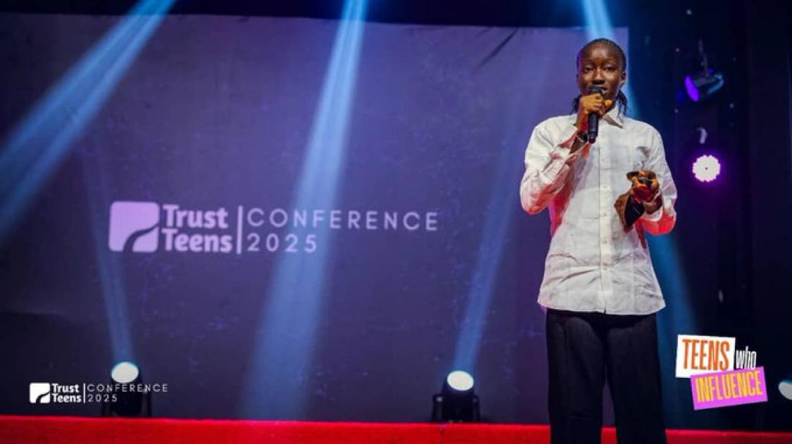

.JPG)
At a time when many teenagers are still discovering what is possible, one student chose to build with a screen she could barely see. Adisa Favour, a student of Abeokuta Girls Grammar School, was first introduced to technology during the Build-a-thon initiative led by the Federal Ministry of Communications, Innovation & Digital Economy in collaboration with the Raspberry Pi Foundation and partners. For her, it wasn’t just another event. It was a moment that changed how she saw herself.
“Technology stopped feeling distant. It became something I could actually do.”
— Adisa FavourBuilding With What Was Available
After the program, the real test began. There was no laptop. No fully functional device. Just a phone with a broken screen. For many, that would have been a stopping point. For Favour, it was a starting point. She adjusted. Looked closely. Worked around what wasn’t working. And continued anyway.
“The screen was damaged, but the idea was clear”
From Observation to Solution
At the Tech with Khalid Foundation (TWiK) bootcamp, she chose to solve a problem she saw every day, waste management. In many communities, waste disposal is inconsistent, unstructured, and difficult to manage. Instead of accepting it, she built a solution. A Waste Management System designed to connect individuals and organizations with waste service providers based on their location.

Favour presenting her Waste Management System at the Trust Teen Conference.
“I wanted to solve something I see around me every day.”
More Than a Project
This wasn’t just about writing code.It was about thinking differently, seeing problems as things that can be solved, not just managed.
- Find waste service providers based on location
- Access contact details easily
- Improve how waste is managed in their environment
From Constraint to Recognition
What started as a bootcamp project didn’t end there. In 2025, Favour submitted the same solution to the Trust Teen Conference, competing against over 200 entries. he advanced to the top 3 finalists. Then came the final stage—over 1,000 people in the room. She stepped forward and presented her idea. And she won.
“It showed me that ideas can go far when you actually build them.”
What This Story Really Means
Favour’s story is not just about winning. It is about what happens when a student is given a chance, no matter how small, to explore, learn, and build.Across many communities, students are working with limited tools, shared devices, damaged screens, improvised resources. And yet, they are building.

“Background should never define potential.”
The Role of Tech with Khalid Foundation
At Tech with Khalid Foundation (TWiK), the goal is not just to teach technology. It is to create access to tools, to knowledge, and to opportunities that allow students to turn ideas into real solutions. Because the difference is often not ability. It is access.
Support the Next Builder
There are more students like Favour, ready to build, ready to solve problems, ready to go further. What they need is the opportunity.
- Access to laptops and digital devices
- Hands-on training and mentorship
- Opportunities to turn ideas into working solutions
Because behind every story like this, there are many more waiting for a chance to begin.
← Back to Spotlight